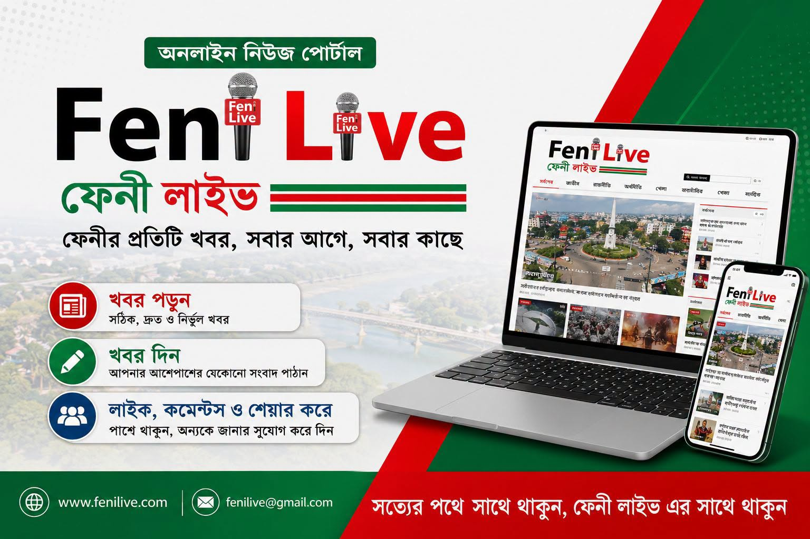

লালপোল অভিযান • ছবি: Bangla Tribune
লালপোল অভিযান • ছবি: Bangla Tribune
ফেনীর লালপোলে মাদকবিরোধী অভিযান, আটক ১৪
শহরতলির লালপোল বেদেপল্লিতে অভিযানে নগদ অর্থ, মাদকদ্রব্য ও সংশ্লিষ্ট সরঞ্জাম জব্দের কথা জানিয়েছে আইনশৃঙ্খলা রক্ষাকারী বাহিনী।
লালপোল অভিযান • ছবি: Bangla Tribune
শহরতলির লালপোল বেদেপল্লিতে অভিযানে নগদ অর্থ, মাদকদ্রব্য ও সংশ্লিষ্ট সরঞ্জাম জব্দের কথা জানিয়েছে আইনশৃঙ্খলা রক্ষাকারী বাহিনী।


ফেনীর প্রতিটি খবর, সবার আগে, সবার কাছে


অভিযানে নগদ ১৭ লাখ ৫১ হাজার ৬০০ টাকা, ৬০০টি ইয়াবা ও ৩০ লিটার চোলাই মদ জব্দের তথ্য প্রকাশ।

দাগনভূঞা পৌর শহরের জিরো পয়েন্ট এলাকায় সংঘর্ষে আহতদের মধ্যে দুজনকে উন্নত চিকিৎসার জন্য ফেনীতে পাঠানো হয়।
সোনাগাজী উপজেলার বঙ্গোপসাগর-সংলগ্ন মুহুরী সেচ প্রকল্পের প্রকৃতি ও পর্যটন সম্ভাবনা নিয়ে ফিচার।
নতুন বিরতি চালুর দিন ফেনী স্টেশন থেকে ৪৭ জন যাত্রী নিয়ে কক্সবাজারের উদ্দেশে রওনা হয় ট্রেনটি।

মুহুরী-কহুয়া বন্যা নিয়ন্ত্রণ, নিষ্কাশন ও সেচ প্রকল্পের পুনর্বাসন কাজের প্রথম পর্যায়ের উদ্বোধন করা হয়।

‘মার্চ ফর ইনসাফ’ কর্মসূচিতে সংবাদ সংগ্রহের সময় সাংবাদিকদের বাধা ও হুমকির অভিযোগ নিয়ে প্রতিবেদন।
জেলার ছয়টি উপজেলা ও আশপাশের জনপদের সংবাদ এক জায়গায়।
ফেনীর প্রতিটি খবর, সবার আগে, সবার কাছে পৌঁছে দিতে Feni Live-এর সঙ্গে থাকুন।